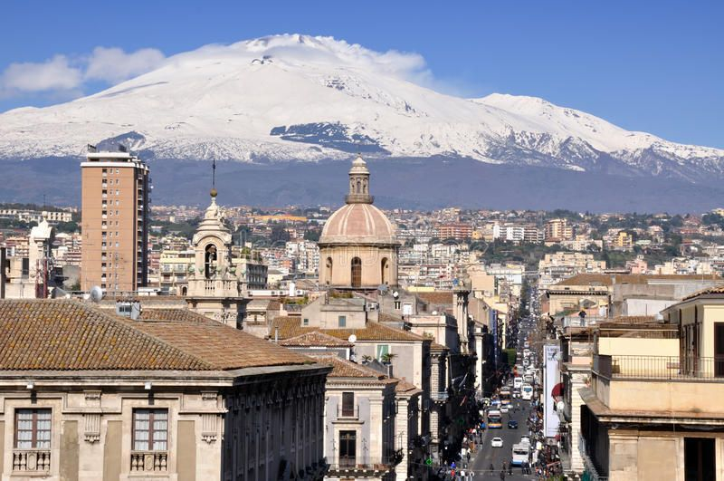
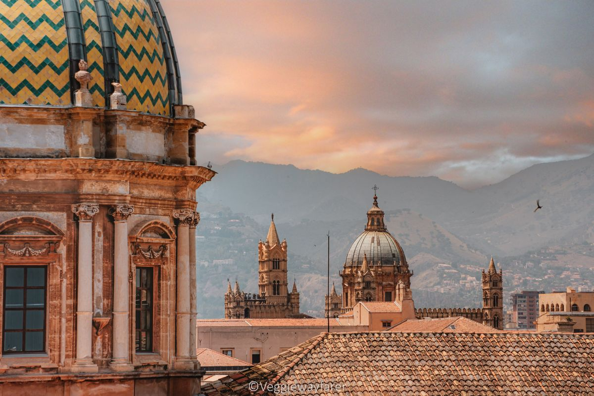
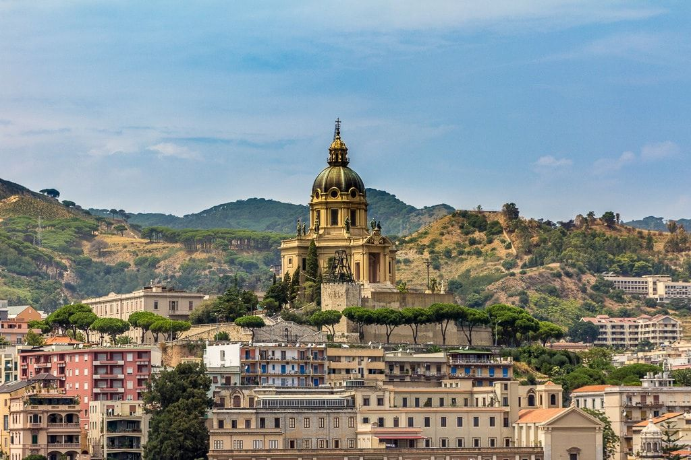
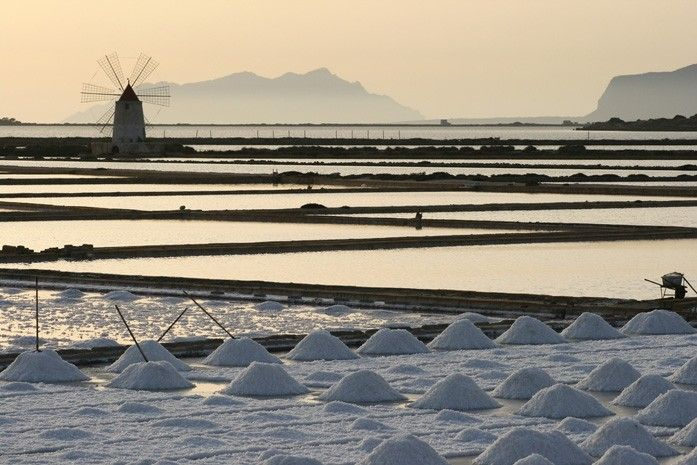

Un viaggio fotografico tra le piazze storiche, i monumenti barocchi, le attività e i panorami mozzafiato dell'isola.
La piazza in Sicilia non è solo uno spazio urbano, ma il cuore pulsante della vita sociale, incorniciata da architetture monumentali che spaziano dal barocco al neoclassico.

Piazza Vincenzo Bellini, nota come Piazza Teatro Massimo a Catania, è il cuore pulsante della vita notturna e culturale, dominata dal maestoso Teatro Massimo Bellini.

La piazza, nota come Piazza Politeama, si trova all'inizio di via Libertà, dove termina l'omonima via. Sulla piazza si affaccia il Teatro Politeama ed al centro della piazza è presente il Monumento a Ruggero Settimo.

Il centro storico e spirituale della città dello Stretto. Ospita la bellissima Fontana d'Orione e l'imponente campanile del Duomo, celebre in tutto il mondo per il suo spettacolare e complesso orologio astronomico meccanico.

Piazza Giuseppe Garibaldi si trova nel cuore del centro storico di Trapani, una zona ricca di storia, vicoli caratteristici e chiese, situata vicino al Corso Vittorio Emanuele.